Antecedentes
En este curso hemos aprendido a describir una serie temporal, estimar su proceso generador de datos y realizar predicciones, tanto puntuales como por intervalo. Para ello, hemos estudiado los principales aspectos teóricos relacionados con las series temporales, sus componentes, criterios de bondad de ajuste y predicción, modelos de ajuste, etc. También hemos practicado la aplicación de estos conceptos a través de diferentes series temporales: Títulos publicados, Nacimientos, Aforo de vehículos, Consumo de alimentos per cápita, Producción de chocolate y Defunciones por enfermedades cerebrovasculares, entre otras.
El programa de estadística utilizado, R, ha servido con dos propósitos entremezclados durante el curso. En primer lugar, para ilustrar los aspectos teóricos que se iban introduciendo. En este caso, R tenía un uso más instrumental y en general se mostraba la salida obtenida sin enseñar el código. En segundo lugar, hemos aprendido a usar R para analizar y predecir una serie temporal real. El ejemplo transversal utilizado durante el curso de Defunciones por enfermedades cerebrovasculares es el principal exponente de este uso de R.
Ahora bien, ambos usos de R –ilustrar aspectos teóricos y analizar una serie– han quedado distribuidos a lo largo de los cinco temas vistos. El ejemplo Pasajeros en transporte urbano desarrollado aquí tiene como objetivo disponer, en un único documento y de forma organizada, del análisis completo de una serie temporal. En este informe se mostrará siempre el código completo empleado para las salidas, se hará hincapié en la aplicación práctica de los conceptos teóricos, se insistirá en los diferentes enfoques que se pueden y deben emplear para analizar una serie temporal y se justificarán todas las decisiones adoptadas.
Este es, por tanto, un ejemplo que se extiende más allá de lo que un informe de análisis de una serie temporal precisa.
Para el código de este ejemplo se utilizarán funciones de las librerías básicas de R, así como de las siguientes:
library(forecast)
library(ggplot2); theme_set(theme_bw())
library(aod)
library(seasonal)
library(tseries)
library(timeDate)
library(gridExtra)
library(knitr)
Pasajeros en transporte urbano
La serie que se va a analizar corresponde al número de pasajeros en transporte urbano en España. Es una serie mensual que puede ser consultada en el Instituto Nacional de Estadística y para la que se dispone de datos desde enero de 1996 hasta diciembre de 2019.
Por transporte urbano de pasajeros se hace referencia a los servicios de transporte terrestre de pasajeros, urbano y suburbano, por itinerarios regulares, con horario establecido y con paradas fijas, realizados por autobuses, tranvías, trolebuses, metros y metros ligeros. También se incluyen las líneas de servicio al aeropuerto y a las estaciones y la explotación de funiculares y teleféricos si forman parte de los sistemas de tránsito urbanos e interurbanos.
Los datos de la serie, que denominaremos de forma abreviada Pasajeros, han sido descargados en el fichero Pasajeros.csv y aunque en origen la unidad es miles de pasajeros, la cambiaremos a millones de pasajeros.
meses <- c("Ene", "Feb", "Mar", "Abr", "May", "Jun",
"Jul", "Ago", "Sep", "Oct", "Nov", "Dic")
Pasajeros <- read.csv2("./series/Pasajeros.csv", header = TRUE)
Pasajeros <- ts(Pasajeros/1000, start = 1996, freq = 12)
Descriptiva
La figura 2.1 muestra la evolución de la serie Pasajeros en transporte urbano desde 1996 hasta 2019. Destaca que la tendencia de la serie ha seguido el ciclo económico. Durante el periodo de crecimiento de finales del siglo pasado y principios de este, el número de pasajeros en transporte urbano creció de forma sostenida. Con la crisis económica iniciada a finales de 2007 se observa un cambio en la tendencia y el número de pasajeros se reduce. No es hasta el final de la crisis en 2014, que la tendencia vuelve a cambiar y pasar a ser creciente de nuevo.
autoplot(Pasajeros, colour = "darkblue",
xlab = "",
ylab = "Millones de pasajeros",
main = "Figura 2.1. Pasajeros en transporte urbano (datos mensuales)") +
scale_x_continuous(breaks= seq(1996, 2019, 2))
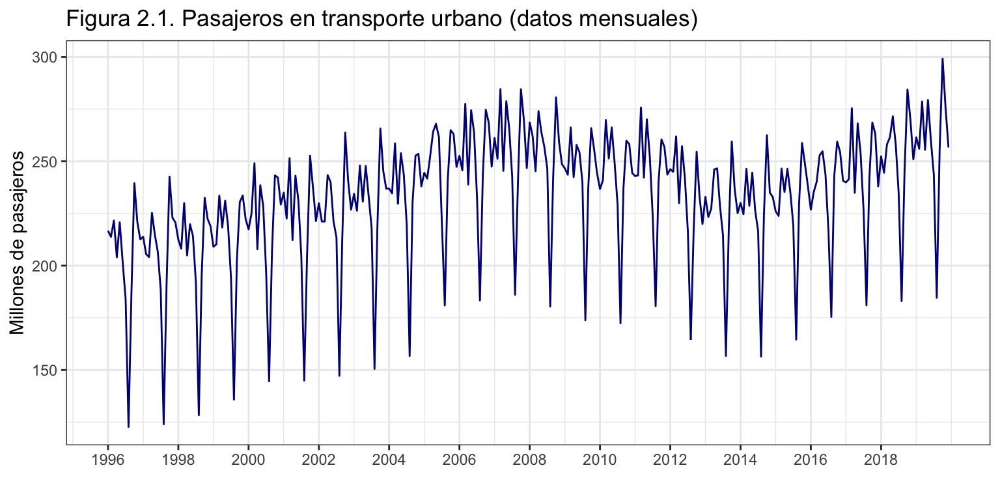
La serie presenta una acusada estacionalidad, causada principalmente por la distribución de las vacaciones a lo largo de un año y el número de días laborables de cada mes. Pensemos que el principal uso del transporte urbano es el traslado hasta y desde el lugar de trabajo, seguido del ocio (ir de compras, al cine, a restaurantes, etc.). Así, cada año el mes con menor número de pasajeros es agosto (los valles en la figura 2.1) por estar la mayoría de la gente de vacaciones, fuera de sus ciudades de residencia habituales, y no usar tan intensamente el transporte urbano.
El esquema parece ser aditivo porque no se aprecia que la amplitud estacional se amplíe conforme el número de pasajeros aumenta.
En los siguientes epígrafes se hará una descriptiva de la tendencia y la estacionalidad más detallada.
Análisis de la tendencia
Si anualizamos la serie podemos, por un lado, identificar mejor en que años se producen los cambios en la tendencia y, por otro lado, poner cifras al volumen de pasajeros en transporte urbano.
PasajerosAnual <- aggregate(Pasajeros, FUN = sum)
autoplot(PasajerosAnual, colour = "darkblue",
xlab = "",
ylab = "Millones de pasajeros",
main = "Figura 2.2. Pasajeros en transporte urbano (datos anuales)") +
scale_x_continuous(breaks= seq(1996, 2019, 2))
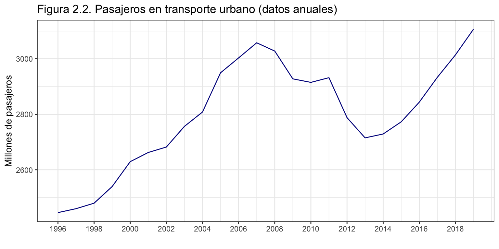
La figura 2.2 muestra el volumen anual de pasajeros en transporte urbano. El crecimiento continuado, posiblemente iniciado antes de 1996 y que permitió superar los 3000 millones de pasajeros en 2007, se ve interrumpido con el inicio de la pasada crisis económica. La caída irregular en el número de pasajeros se interrumpe en 2014, año que marca la salida de la crisis económica y el inicio de la recuperación en el serie. Actualmente se han superado los 3100 millones de pasajeros.
El incremento en el uso del transporte urbano observado antes y después de la crisis puede tener distintas causas: un uso más intensivo del transporte urbano en detrimento de otros medios de transporte, una reorganización de los servicios de transporte urbano que haya mejorado la conectividad dentro de los municipios, o un aumento en el número de líneas de autobús, tranvía o metro en determinadas ciudades.
No está clara la causa del repunte aislado observado el año 2011, en plena crisis, pero puede deberse a una ligera recuperación en la economía que tuvo lugar a finales de 2010 y principios de 2011.
Análisis de la estacionalidad
La principal causa de la estacionalidad observada en la serie es la estructura vacacional de la sociedad, especialmente caracterizada por las vacaciones de verano (julio a septiembre) y las vacaciones de Semana Santa (en marzo y/o abril, según el año). Además, debido a que el transporte urbano se usa principalmente para ir a trabajar, también influye el número de días laborables del mes. Por ejemplo, en 2017 el mes de junio tuvo 22 días laborables, mientras que en 2019 tuvo 20 días laborables. Esta diferencia de dos días tendrá un efecto sobre el volumen de pasajeros.
El número de días laborables de un mes viene marcado por los fines de semana del mes y por las festividades nacionales. Es cierto que el sábado se trabaja en diversos sectores (comercio, ocio, distribución) pero la caída en el número de trabajadores respecto de los días entre semana (lunes a viernes) es muy notable. También es cierto que, además de las festividades nacionales, hay muchas festividades autonómicas o municipales que podrían afectar al volumen de pasajeros en transporte urbano, pero este hecho no se van a tener en cuenta. Por ejemplo, las festividades regionales en comunidades como Madrid o Cataluña pueden tener un efecto significativo sobre la serie Pasajeros.
Por tanto, para realizar un análisis detallado de la estacionalidad, es necesario crear una serie con el número de días laborables de cada mes. Además, esta serie se usará más adelante para modelizar y predecir la serie Pasajeros.
Días laborables de cada mes
La librería timeData proporciona una serie de funciones que permiten definir un calendario de festividades, identificar los fines de semana y, a partir de aquí, crear la serie de días laborables (véase código más abajo).
Con timeCalendar se definen las consideradas festividades nacionales: Año nuevo (1 de enero), Reyes (6 de enero), Viernes Santo (fecha variable), Día del Trabajo (1 de mayo), Día de la Asunción (15 de agosto), Día de la Hispanidad (12 de octubre), Día de Todos los Santos (1 de noviembre), la Constitución (6 de diciembre) la Inmaculada Concepción (8 de diciembre) y Navidad (25 de diciembre).
Por claridad, cada festivo se ha definido de forma independiente para después crear una variable con todas las festividades (FestivosNacionales).
El rango para todos los cálculos va desde 1996 hasta 2024, que incluye el rango de la serie Pasajeros más cinco años de predicción.
La función utilizada Easter de la librería timeDate difiere de la función easter de forecast.
A continuación, con timeSequence se crea una serie diaria desde el 1 de enero de 1996 hasta el 31 de diciembre de 2024.
Las dos siguientes líneas eliminan de la serie diaria los festivos y los fines de semana, (función isBizday), para después dar a esta nueva serie el formato año-mes eliminando el día. De esta forma, la serie de días laborales tendrá el mismo identificador para todos los días del mismo mes.
Después, se crea una tabla que, por la naturaleza de la serie de días laborales, tendrá para cada año-mes el numero de días laborables. Por último fechamos la tabla, que es nuestra serie de días laborables y mostramos algunos datos.
Las dos últimas líneas de código dividen la serie en el periodo muestral y el de predicción.
AnoNuevo <- timeCalendar(d = 1, m = 1, y = 1996:2024)
Reyes <- timeCalendar(d = 6, m = 1, y = 1996:2024)
ViernesSanto <- Easter(1996:2024, shift = -2)
DiaTrabajo <- timeCalendar(d = 1, m = 5, y = 1996:2024)
Asuncion <- timeCalendar(d = 15, m = 8, y = 1996:2024)
Hispanidad <- timeCalendar(d = 12, m = 10, y = 1996:2024)
TodoSantos <- timeCalendar(d = 1, m = 11, y = 1996:2024)
Constitucion <- timeCalendar(d = 6, m = 12, y = 1996:2024)
Inmaculada <- timeCalendar(d = 8, m = 12, y = 1996:2024)
Navidad <- timeCalendar(d = 25, m = 12, y = 1996:2024)
FestivosNacionales <- c(AnoNuevo, Reyes, ViernesSanto,
DiaTrabajo, Asuncion, Hispanidad, TodoSantos,
Constitucion, Inmaculada, Navidad)
fechaDiaria <- timeSequence(from = "1996-01-01", to = "2024-12-31")
biz <- fechaDiaria[isBizday(fechaDiaria, holidays = FestivosNacionales)]
bizdays <- format(biz, format = "%Y-%m")
DiasLaborables <- table(bizdays)
DiasLaborables <- ts(DiasLaborables, start = 1996, frequency = 12)
subset(DiasLaborables, start = 289) #Mostramos solo los 5 últimos años
Jan Feb Mar Apr May Jun Jul Aug Sep Oct Nov Dec
2020 21 20 22 21 20 22 23 21 22 21 21 21
2021 19 20 23 21 21 22 22 22 22 20 21 21
2022 20 20 23 20 22 22 21 22 22 20 21 20
2023 21 20 23 19 22 22 21 22 21 21 21 18
2024 22 21 20 22 22 20 23 21 21 23 20 20
pDiasLaborables <- subset(DiasLaborables, start = length(DiasLaborables) - 59)
DiasLaborables <- subset(DiasLaborables, end = length(DiasLaborables) - 60)
Es conveniente indicar que la identificación de las festividades nacionales dista de ser perfecta por varios motivos:
- algunos festivos nacionales si caen en domingo, se pasan a lunes (por ejemplo Reyes y la Inmaculada de 2019), aspecto que no se ha tenido en cuenta.
- algunos festivos nacionales pueden ser sustituidos por otros días por las Comunidades Autónomas, por ejemplo Reyes o Jueves Santo.
Análisis gráfico de la estacionalidad
Veamos ahora una descriptiva detallada de la estacionalidad de la serie Pasajeros, haciendo especial hincapié en el efecto de las vacaciones (verano y Semana Santa) y el número de días laborables. Para ello, mostraremos gráficamente las subseries definidas por el mes, tanto para Pasajeros como para Pasajeros por día laborable, esta segunda resultado de dividir Pasajeros por DiasLaborables.
PasajerosDL <- Pasajeros/DiasLaborables
g1 <- ggsubseriesplot(Pasajeros) +
ylab("Millones de pasajeros") +
xlab("") +
ggtitle("Figura 2.3a. Gráfico estacional para Pasajeros")
g2 <- ggsubseriesplot(PasajerosDL) +
ylab("Millones de pasajeros") +
xlab("") +
ggtitle("Figura 2.3b. Gráfico estacional para Pasajeros por día laboral")
grid.arrange(
grobs = list(g1, g2),
ncol = 1
)
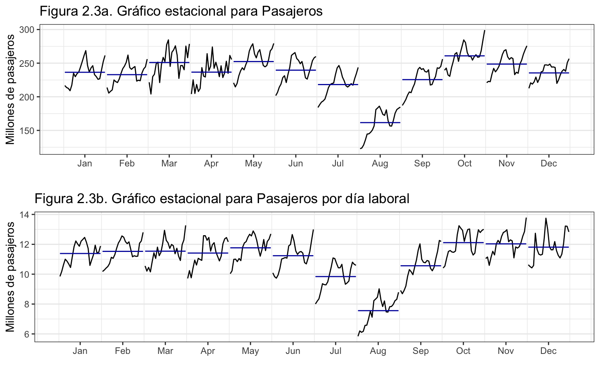 Las figuras 2.3a y 2.3b muestran para cada mes la serie de pasajeros (total o por día laborable) y el valor medio (línea azul horizontal). En ambos casos se identifica perfectamente el efecto de los periodos vacacionales sobre el transporte urbano de pasajeros. En las vacaciones de verano se observa una fuerte caída en el número de pasajeros, especialmente en agosto y, en menor medida, en julio y septiembre. Por otro lado, las subseries de marzo y abril muestran mucha más irregularidad que las de otros meses debido a que el volumen de pasajeros depende de cómo ha caído la Semana Santa. Si un año esta cae en marzo, ese mes presentará un volumen de pasajeros inferior al de los meses de marzo sin Semana Santa, mientras que en abril se dará el efecto contrario. Diciembre, para ser un mes de 31 días, presenta también un reducido número de pasajeros debido a las vacaciones navideñas.
La figura 2.3a muestra el efecto estacional total debido al número de días del mes y de días laborales. Por ejemplo, en febrero, el mes con menos días y por tanto con menos días laborales, en media se transportan menos pasajeros, comparado con enero o marzo. Octubre, un mes con 31 días, muestra un volumen medio de pasajeros mayor que noviembre de 30 días.
En la figura 2.3b se ha eliminado el efecto de los días laborables al trabajar con la serie de pasajeros transportados por día laborable. Si la comparamos con la figura 2.3a, destaca que las diferencias entre las medias (lineas azules) se han reducido: prácticamente no hay diferencias entre los meses de enero a junio, o entre los meses de octubre a diciembre.
Cabe pensar que al excluir de la serie de días laborables la Semana Santa, en la figura 2.3b las subseries de marzo y abril deberían ser tan suaves como las observadas para otro meses, pero no es así. Claramente la simple exclusión de los festivos nacionales de Semana Santa no es suficiente para recoger bien su efecto sobre el transporte urbano. La razón hay que buscarla en las vacaciones escolares de este periodo, que en algunas comunidades autónomas tiene lugar durante la propia semana de Semana Santa, mientras que en otras comunidades tiene lugar en la semana posterior. De esta forma, el efecto sobre el transporte urbano de Semana Santa no es homogéneo en el territorio nacional y resulta difícil incluirlo en el análisis de la serie Pasajeros. Cuando se analice la serie por modelos Arima será conveniente recordar este hecho.
Análisis numérico de la estacionalidad
Podemos obtener la componente estacional de forma sencilla para poder valorar numéricamente el efecto estacional y ver que efecto tiene el número de días laborables. Previamente, debemos determinar el esquema, aditivo o multiplicativo, de la serie.
La gráfica media-desviación típica (figura 2.4) refuerza la impresión que se obtenía de la gráfica de la serie (figura 2.1), que el esquema es aditivo.
MediaAnual = aggregate(Pasajeros, FUN = mean)
DesviacionAnual = aggregate(Pasajeros, FUN = sd)
ggplot() +
geom_point(aes(x = MediaAnual, y = DesviacionAnual), size = 2) +
xlab("Media de pasajeros por año") +
ylab("Desviación típica de pasajeros por año") +
ggtitle("Figura 2.4. Identificación del tipo de esquema")
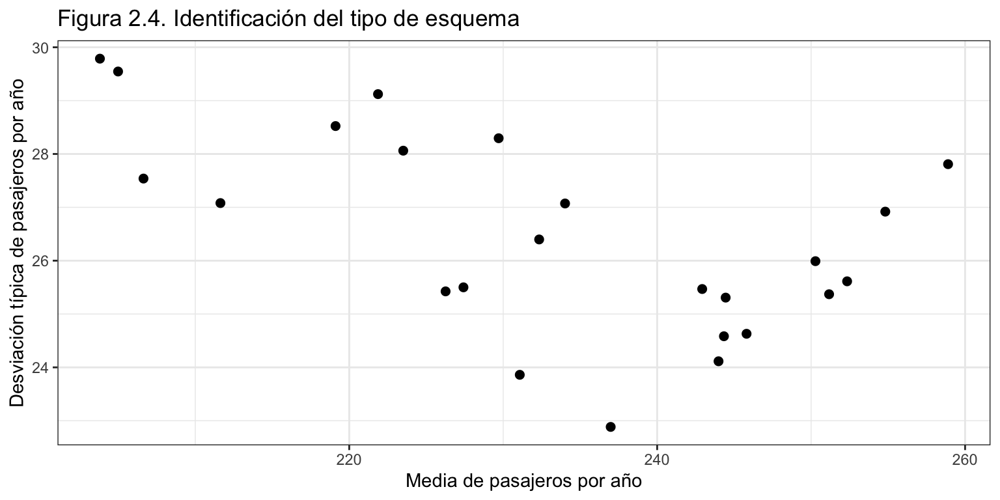
PasajerosMedia <- tapply(Pasajeros - mean(Pasajeros),
cycle(Pasajeros),
mean)
PasajerosDLMedia <- tapply((PasajerosDL - mean(PasajerosDL)),
cycle(PasajerosDL),
mean)
datos <- cbind(PasajerosMedia, PasajerosDLMedia)
colnames(datos) <- c("Pasajeros", "Pasajeros por día laborable")
rownames(datos) <- meses
kable(datos,
digits = 2,
caption = "Efecto estacional")
Efecto estacional
| Ene |
3.17 |
0.32 |
| Feb |
-0.36 |
0.46 |
| Mar |
17.71 |
0.47 |
| Abr |
3.37 |
0.35 |
| May |
19.12 |
0.70 |
| Jun |
6.31 |
0.17 |
| Jul |
-15.09 |
-1.22 |
| Ago |
-71.66 |
-3.51 |
| Sep |
-7.76 |
-0.50 |
| Oct |
27.61 |
1.05 |
| Nov |
15.35 |
0.97 |
| Dic |
2.21 |
0.74 |
La tabla 1 pone en cifras el efecto estacional sobre los Pasajeros (primera columna): en agosto la caída en el número de pasajeros, respecto de la media anual, se cifra en 72 millones de pasajeros. En julio, septiembre y en menor medida febrero también el uso del transporte urbano es inferior a la media anual, en el caso de los dos primeros meses por las vacaciones de verano y en febrero debido a ser el mes con menos días del año. Por otro lado, destaca el elevado número de pasajeros en los meses de marzo, mayo y octubre, por tener 31 días, y noviembre, por razones desconocidas.
Tras la corrección por el número de días laborales, el efecto estacional es más suave (véase la segunda columna en la tabla 1). Ahora, los meses de febrero y marzo tienen un efecto similar, al igual que octubre y noviembre. También se observa que las diferencias entre marzo y abril se han reducido enormemente. También el efecto número de días del mes ha desaparecido en gran medida.
Descomposición de la serie
Ya hemos realizado una descripción detallada de las principales componentes de la serie, la tendencia y la estacionalidad. Ahora vamos a proceder a descomponerla a fin de analizar, aunque sea de forma gráfica, el error y tener ya una primera impresión sobre la relevancia de la componente de intervención en Pasajeros.
Dado que la serie presenta un esquema aditivo, usaremos el método de descomposición por regresiones locales ponderadas, asumiendo una componente estacional constante y considerando la presencia de posibles valores extremos.
PasajerosStl <- stl(Pasajeros[,1], s.window = "periodic", robust = TRUE)
error <- remainder(PasajerosStl)
sderror <- sd(error)
autoplot(error,
xlab = "",
ylab = "Error",
main = "Figura 2.5. Error + Intervención",
colour = "darkblue") +
geom_hline(yintercept = c(3, 2, -2, -3)*sderror,
colour = c("red", "green", "green", "red"),
lty = 2) +
scale_x_continuous(breaks= seq(1996, 2019, 4))
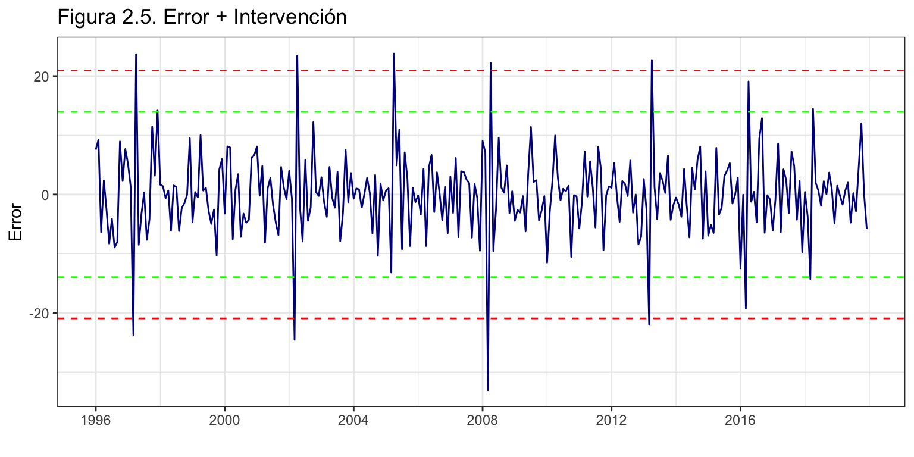
La figura 2.5 muestra el error de la descomposición y los intervalos de confianza al 95% (líneas verdes) y el 99.7% (líneas rojas). Se aprecian claramente múltiples valores extremos (superan las tres desviaciones típicas) en forma de compensación (dos errores extremos consecutivos de signo opuesto) que corresponden a los meses de marzo y abril de 1997, 2002, 2008 y 2013, y otro valor extremo en abril de 2005. Además, en marzo y abril de 2016 hay dos valores atípicos. Nótese que todos los valores identificados corresponden a los meses de marzo y abril, y en todos los casos el error negativo tiene lugar en marzo y el positivo en abril. Si miramos un calendario veremos que tienen lugar en los años en que Semana Santa cayó en marzo.
Si repetimos este análisis para la serie de Pasajeros por día laborable, los resultados son bien diferentes (véase figura 2.6). Ahora solo se detectan dos valores extremos en diciembre de 2000 y 2006. También destaca el error de diciembre de 2017. Los errores en diciembre se dan cuando Navidad cae en lunes, de forma que la caída en el transporte urbano debida a la nochebuena coincide con la de cualquier domingo. Así, estos meses de diciembre presentan más transporte urbano que los meses de diciembre donde la nochebuena cae entre semana.
PasajerosStl <- stl(PasajerosDL[,1], s.window = "periodic", robust = TRUE)
error <- remainder(PasajerosStl)
sderror <- sd(error)
autoplot(error,
xlab = "",
ylab = "Error",
main = "Figura 2.6. Error + Intervención",
colour = "darkblue") +
geom_hline(yintercept = c(3, 2, -2, -3)*sderror,
colour = c("red", "green", "green", "red"),
lty = 2) +
scale_x_continuous(breaks= seq(1996, 2019, 4))
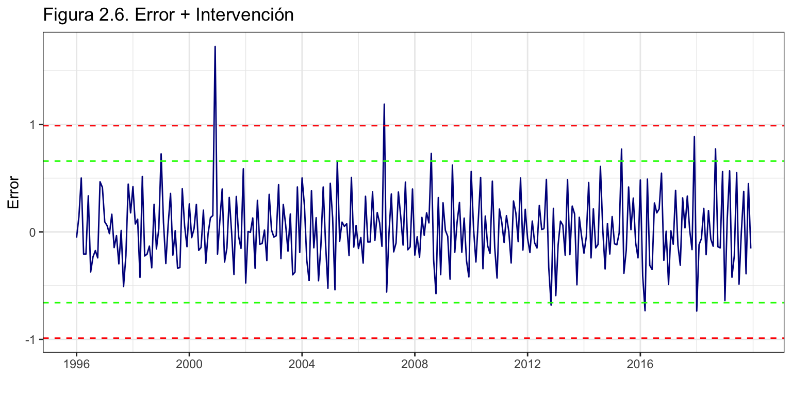
Para la identificación de los valores extremos se ha hecho uso de las funciones easter del paquete forecast y dayOfWeek del paquete timeDate.
Conclusión
La serie de pasajeros en transporte urbano muestra una tendencia creciente solo interrumpida entre 2008 y 2013 debido a la reciente crisis económica.
Los principales determinantes de la estacionalidad de la serie Pasajeros son los grandes periodos vacacionales en España (Semana Santa y verano) y el número de días laborales del mes. Sin embargo, en la serie Pasajeros corregida por días laborables, la componente estacional se ha suavizado y prácticamente queda determinada por las vacaciones.
La intervención tiene lugar en los meses de marzo y abril debido al carácter móvil de la Semana Santa, y en diciembre cuando el día de Navidad cae en lunes de forma que la caída de pasajeros de nochebuena se solapa con la de cualquier domingo.
Una predicción rápida y sencilla
En los siguientes epígrafes aplicaremos técnicas de predicción crecientes en complejidad conceptual y computacional, y que requerirán de más hipótesis para su correcta aplicación. Aunque actualmente más complejidad no siempre implica más recursos (temporales, humanos, informáticos), cabe preguntarse si vale la pena. Así, más por una cuestión teórica que práctica, veamos cual sería la calidad de las predicciones si aplicamos una metodología sencilla, en este caso el método ingenuo con estacionalidad.
Los indicadores de calidad de ajuste (predicción intra-muestral a un periodo vista) indican que repetir la última observación del mismo mes puede ser suficiente para obtener una buena predicción a corto plazo. En media el error es de 11 millones de pasajeros (RMSE), aproximadamente un 3.5%. A largo plazo, las predicciones pueden perder calidad rápidamente puesto que no capturan ningún tipo de tendencia. La figura 3.1 muestra como la predicción del número de pasajeros para los años 2020 a 2024 se mantiene estacionaria y no refleja la tendencia creciente observada desde 2014.
PasajerosSnaive <- snaive(Pasajeros, h = 60)
accuracy(PasajerosSnaive)
ME RMSE MAE MPE MAPE MASE ACF1
Training set 2.395109 10.97663 8.274051 0.9596103 3.513767 1 -0.009148132
autoplot(PasajerosSnaive,
PI = FALSE,
xlab = "",
ylab = "Millones de pasajeros",
main = "Figura 3.1. Pasajeros en transporte urbano y predicción.\nMétodo ingenuo con estacionalidad") +
scale_x_continuous(breaks= seq(1996, 2024, 2))
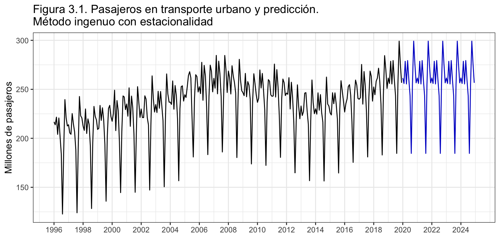
Este será nuestro punto de referencia. Cabe esperar que en los siguientes epígrafes, donde aplicaremos técnicas de Alisado exponencial y modelos Arima, se observe un incremento significativo en la calidad del ajuste.
Nota: la Covid-19 ha supuesto un shock de una magnitud inesperada en todos los aspectos de la sociedad española y, en concreto, en los hábitos de transporte urbano. Es por ello que todas las predicciones que aparecen en este ejemplo de aplicación sobre-estimarán enormemente las cifras de transporte reales. Cualquier método de predicción asume que las condiciones del entorno en que se aplica no van a cambiar en el futuro.
Alisado exponencial
En primer lugar analizaremos la capacidad predictiva de los métodos de Alisado exponencial sobre la serie Pasajeros. Con este fin, ajustaremos el mejor modelo de alisado y estimaremos los criterios de calidad para el ajuste y las predicciones extra-muestrales según el horizonte temporal. Posteriormente veremos si es posible mejorar las predicciones analizando la transformación logarítmica de Pasajeros y analizando la serie Pasajeros por día laborable.
Análisis de la serie Pasajeros
Estimación e interpretación
El modelo óptimo, estimado con la función ets sin imponer ninguna restricción, es ETS(M,Ad,A): pendiente aditiva con amortiguamiento, estacionalidad aditiva y residuo multiplicativo. \[y_{t+1} = (l_t + \phi b_t + s_{t+1-m}) \cdot (1 + \varepsilon_{t+1}).\]
PasajerosEts <- ets(Pasajeros)
summary(PasajerosEts)
ETS(M,Ad,A)
Call:
ets(y = Pasajeros)
Smoothing parameters:
alpha = 0.1399
beta = 0.0155
gamma = 0.0001
phi = 0.9519
Initial states:
l = 203.0359
b = -0.2422
s = 1.6552 13.7019 27.0824 -8.5191 -72.2385 -15.5654
6.9185 19.6327 4.3478 18.4248 0.7125 3.8471
sigma: 0.0334
AIC AICc BIC
2824.586 2827.129 2890.519
Training set error measures:
ME RMSE MAE MPE MAPE MASE ACF1
Training set 0.5607875 7.495515 5.663654 0.159973 2.454865 0.6845081 -0.1445364
El valor de \(\phi=\) 0.95 indica que la inclusión de amortiguamiento en el modelo mejora sensiblemente su ajuste a los datos. Por otro lado, \(\gamma\) es técnicamente cero, indicando que el efecto estacional se mantiene constante en el tiempo. Sin embargo, el valor de \(\beta\), reducido pero no nulo, indica que la pendiente cambia en el tiempo de forma muy lenta.
La calidad del ajuste es bastante buena, con un error porcentual del 2.5% o un error de 7.5 millones de pasajeros (RMSE). La aplicación del método de alisado supone una reducción de un punto en el error porcentual respecto del método ingenuo, o una reducción de 3.5 millones de pasajeros. Es decir, el modelo de alisado exponencial supone una mejora en la calidad del ajuste del 32% respecto del método ingenuo con estacionalidad visto en el epígrafe previo (MASE).
El efecto estacional, que recordemos se mantiene constante en el tiempo, es prácticamente idéntico al estimado en la descriptiva y viene determinado por los periodos vacacionales y el número de días del mes (y por consiguiente el número de días laborables). Véase la figura 4.1.
En verano (julio a septiembre) el uso del transporte urbano es inferior a la media anual, destacando agosto con un descenso de 72 millones de pasajeros. Por el contrario, Octubre destaca por ser el mes con mayor incremento en el volumen de pasajeros (27 millones) respecto de la media anual.
PasajerosEtsEst <- PasajerosEts$states[nrow(PasajerosEts$states), 14:3]
names(PasajerosEtsEst) <- meses
round(PasajerosEtsEst, 2)
Ene Feb Mar Abr May Jun Jul Ago Sep Oct Nov
3.85 0.71 18.43 4.35 19.63 6.92 -15.56 -72.24 -8.52 27.08 13.71
Dic
1.65
ggplot() +
geom_line(aes(x = 1:12, y = PasajerosEtsEst), colour = "darkblue") +
geom_hline(yintercept = 0, colour = "black", lty = 2) +
ggtitle("Figura 4.1. Componente estacional estimada con Alisado exponencial") +
xlab("") +
ylab("Efecto estacional") +
scale_x_continuous(breaks= 1:12,
labels = meses)
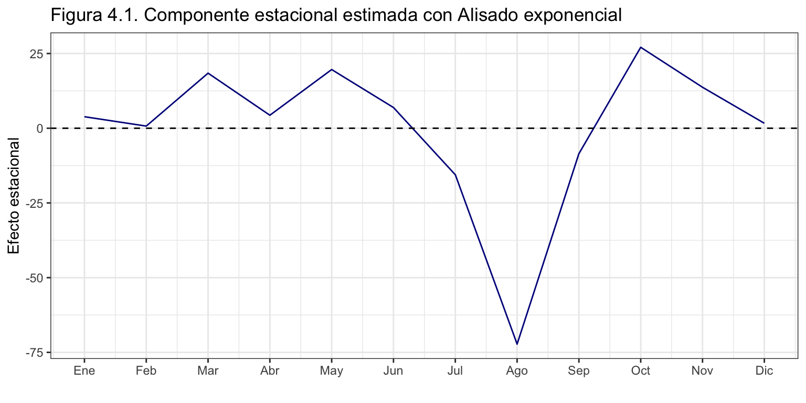
Predicción
Podemos ahora pedir los valores de predicción y su intervalo de confianza al 95% para los próximos cinco años. No mostramos los resultados numéricos, pero si gráficos (figura 4.2). Las predicciones muestran una tendencia creciente amortiguada y, por tanto, no tan acusada como la observada en los años precedentes.
PasajerosEtsPre <- forecast(PasajerosEts, h = 60, level = 95)
autoplot(PasajerosEtsPre,
xlab = "",
ylab = "Millones de pasajeros",
main = "Figura 4.2. Pasajeros (1996-2019) y predicción (2020-2024).\nMétodo de alisado exponencial")
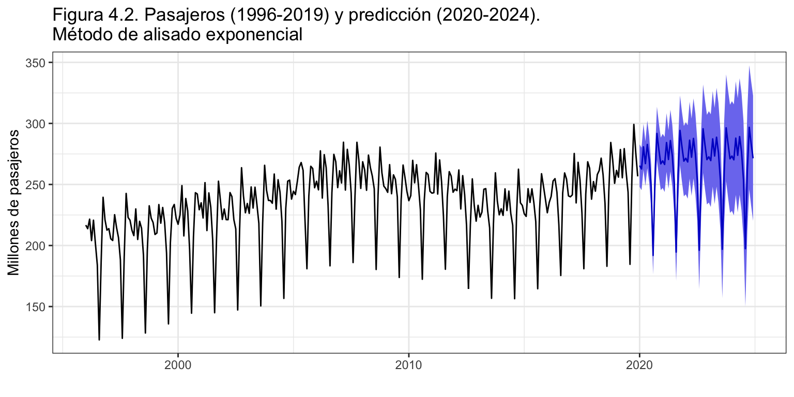
En el año 2020 se esperan 3163 millones de pasajeros, un 1.8% más que en 2019.
Análisis del error
El residuo del modelo (figura 4.3) muestra varios valores que pueden ser considerados como atípicos y que se dan siempre en los meses de marzo y abril para los años donde la Semana Santa recayó en marzo.
error <- residuals(PasajerosEts)
sderror <- sd(error)
autoplot(error,
xlab = "",
ylab = "Error",
main = "Figura 4.3. Error + Intervención. Método de alisado",
colour = "darkblue") +
geom_hline(yintercept = c(-3, -2, 2 ,3)*sderror,
colour = c("red", "green", "green", "red"), lty = 2) +
scale_x_continuous(breaks= seq(1996, 2019, 2))
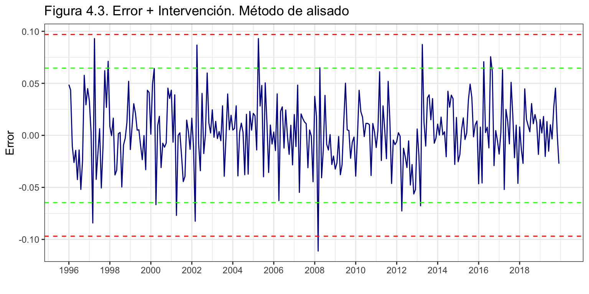
Otras alternativas de análisis
En la descriptiva se ha visto que la serie de pasajeros por día laborable tiene un comportamiento más suave (la componente estacional era más plana) y presentaba un menor número de valores atípicos que la serie original Pasajeros. Cabe esperar, por tanto, que esta serie presente un mejor ajuste con los métodos de alisado exponencial y ofrezca mejores predicciones.
Por otro lado, siempre vale la pena analizar la transformación logarítmica de la serie y ver si ofrece mejores resultados que la serie original. La transformación logarítmica es especialmente eficaz para series no lineales, así que para Pasajeros posiblemente no suponga ningún mejora.
Las transformaciones indicadas en los dos párrafos precedentes son solo dos de las posibles. También se pude analizar la serie de pasajeros por día del mes o la transformación óptima de Box-Cox. La idea es no quedarse con lo inmediato, la serie tal cual nos la han ofrecido, sino probar otras alternativas. Por ejemplo, la serie de Pasajeros es el agregado del número de pasajeros que viajan en transporte urbano según el tipo de transporte (autobús, metro, tranvía…). Se podría proceder a analizar cada serie por separado (pasajeros en autobús, pasajeros en metro, etc.), para luego agregar los resultados y ver si este enfoque da mejores resultados que el análisis directo de la serie agregada Pasajeros.
En este epígrafe se analizarán las dos primeras transformaciones indicadas, la transformación logarítmica y los pasajeros por día laborable. El objetivo es ver si es posible mejorar la calidad de las predicciones obtenidas para Pasajeros. Se usará como criterio de bondad el error de las predicciones extra-muestrales según el horizonte temporal, obtenido con el procedimiento origen de predicción móvil. Asumiremos que son necesarios 10 años para obtener una buena estimación del modelo y el horizonte temporal se fijará en 12 meses (\(k = 120, h = 12\)). Previamente, hay que identificar el mejor modelo para las series transformadas.
[1] "ETS(M,Ad,A)"
ets(Pasajeros, lambda = 0)$method
[1] "ETS(A,Ad,A)"
k <- 120
h <- 12
TT <- length(Pasajeros)
s <- TT - k - h
mapeAlisadoPas <- matrix(NA, s + 1, h)
mapeAlisadolPas <- matrix(NA, s + 1, h)
mapeAlisadoPasDL <- matrix(NA, s + 1, h)
for (i in 0:s) {
train.set <- subset(Pasajeros, start = i + 1, end = i + k)
test.set <- subset(Pasajeros, start = i + k + 1, end = i + k + h)
trainDL.set <- subset(PasajerosDL, start = i + 1, end = i + k)
testDL.set <- subset(PasajerosDL, start = i + k + 1, end = i + k + h)
fit <- ets(train.set, model = "MAA", damped = TRUE)
fcast <- forecast(fit, h = h)
mapeAlisadoPas[i + 1,] <- 100*abs(test.set - fcast$mean)/test.set
fit <- ets(train.set, model = "AAA", damped = TRUE, lambda = 0)
fcast <- forecast(fit, h = h)
mapeAlisadolPas[i + 1,] <- 100*abs(test.set - fcast$mean)/test.set
fit <- ets(trainDL.set, model = "MAA", damped = TRUE)
fcast <- forecast(fit, h = h)
mapeAlisadoPasDL[i + 1,] <- 100*abs(testDL.set - fcast$mean)/testDL.set
}
errorAlisadoPas <- colMeans(mapeAlisadoPas)
errorAlisadoPasDL <- colMeans(mapeAlisadoPasDL)
errorAlisadolPas <- colMeans(mapeAlisadolPas)
datos <- data.frame(
factor = c(rep("Pasajeros", 12),
rep("Pasajeros por día laborable", 12),
rep("Pasajeros (log)", 12)),
x = c(1:12, 1:12, 1:12),
y = c(errorAlisadoPas, errorAlisadoPasDL, errorAlisadolPas)
)
ggplot(datos, aes(x = x, y = y, colour= factor)) +
geom_line() +
ggtitle("Figura 4.4. Error de predicción (MAPE) según horizonte temporal y enfoque") +
xlab("Horizonte temporal de predicción") +
ylab("%") +
scale_x_continuous(breaks= 1:12) +
scale_y_continuous(breaks= seq(2.6, 4, .2)) +
guides(colour = guide_legend(title = "Métodos")) +
theme(legend.position=c(0.02,0.98), legend.justification=c(0,1))
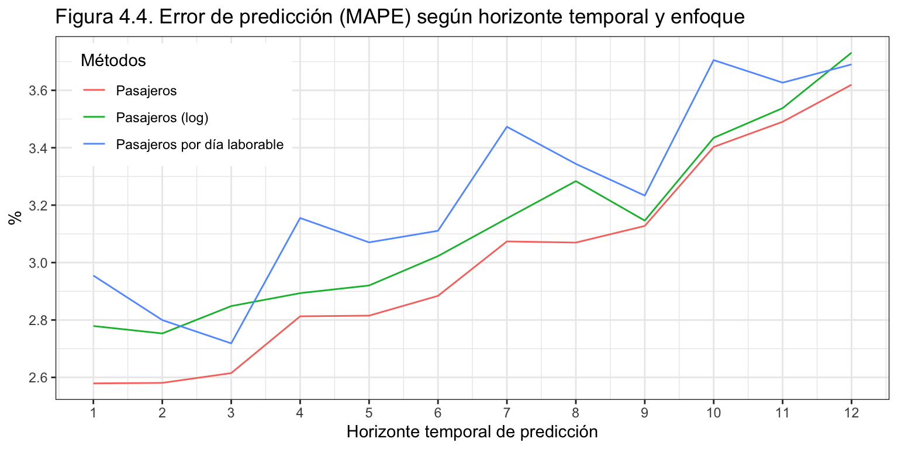
Antes de pasar al análisis de los resultados, indicar que en las predicciones sobre el logaritmo no se ha pedido corrección por sesgo, y que al trabajar con errores porcentuales no es necesario pasar la predicción de pasajeros por día laborable a predicción de pasajeros.
La figura 4.4 muestra los errores de predicción según el horizonte temporal para las tres aproximaciones. En todos los casos el error aumenta con el horizonte temporal de predicción, de forma que las predicciones a doce meses vista tienen un error un punto porcentual superior a las predicciones a un mes vista.
Por otro lado, con independencia del horizonte temporal, las predicciones realizadas sobre la serie original Pasajeros son las más ajustadas, seguidas de las predicciones realizadas sobre su transformación logarítmica. En contra de lo esperado, la predicción a partir de la serie de pasajeros por día laborable es la que mayor error porcentual presenta, en media 0.25 puntos por encima del error de predicción de Pasajeros.
Conclusión
Los modelos de Alisado exponencial resultan excelentes para predecir la serie Pasajeros. El error de ajuste, del 2.5%, es un punto inferior al error obtenido con el método ingenuo con estacionalidad. Además, en las predicciones extra-muestrales a 12 meses vista el error porcentual sigue manteniéndose bajo, no superando el 4%.
Ningún enfoque alternativo probado para la predicción del número de pasajeros por métodos de alisado ha dado mejores resultados que el análisis directo de la serie.
Modelos Arima
La aplicación de la metodología Arima a la serie Pasajeros implica un notable incremento en la complejidad de los modelos y en los requerimientos estadísticos, que solo está justificada si se reduce adecuadamente el error de predicción.
En los epígrafes previos hemos visto que la serie Pasajeros tiene una componente de intervención muy acusada, destacando el número de días del mes, el de días laborables, el fechado de la Semana Santa y que el día de Navidad caiga en lunes. Cabe espera, por tanto, que la incorporación de estos efectos calendario en el análisis de la serie incremente significativamente la calidad de ajuste y la capacidad predictiva. Veamos si es así.
Transformación de la serie Pasajeros
Por un lado, el análisis por Alisado exponencial ha puesto de relieve el carácter lineal de Pasajeros y la poca efectividad que tiene usar la transformación logarítmica para mejorar la calidad de las predicciones. Además, la transformación óptima de Box-Cox ofrece un parámetro \(\lambda=\) 1.55, que tampoco justifica el uso de la transformación logarítmica.
[1] 1.54572
Por otro lado, tras un análisis preliminar por modelos Arima hemos visto que el error no verificaba la hipótesis de homocedasticidad, mientras que el error correspondiente a su transformación logarítmica si cumple dicha hipótesis.
Ante esta situación, hemos optado por aplicar la transformación logarítmica a Pasajeros.
Las FAC del logaritmo de la serie y algunas de sus diferenciaciones (figura 5.1) indican que es necesaria la doble diferenciación regular y estacional para alcanzar las hipótesis de estacionariedad y ergodicidad: \(\log(Pasajeros) \sim I(1)I_{12}(1)\). Los resultados ofrecidos por las funciones ndiffs y nsdiffs apoyan esta conclusión.
grid.arrange(
ggAcf(log(Pasajeros), lag = 72, main = "Figura 5.1. FAC para Pasajeros (log)",
xlab = "", ylab = expression(log(y[t]))),
ggAcf(diff(log(Pasajeros)), lag = 72, main = "",
xlab = "", ylab = expression(nabla*log(y[t]))),
ggAcf(diff(log(Pasajeros), lag = 12),lag = 72, main = "",
xlab = "", ylab = expression(nabla[12]*log(y[t]))),
ggAcf(diff(diff(log(Pasajeros), lag=12)), lag = 72, main = "",
xlab = "", ylab = expression(nabla*nabla[12]*log(y[t]))),
nrow = 2
)
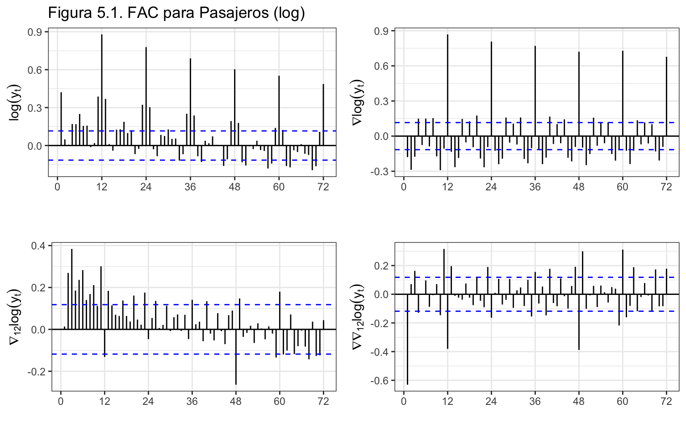
[1] 1
[1] 1
La figura 5.2 muestra la serie original \(y_t\) y la serie transformada \(\nabla \nabla_{12} \log(y_t)\). En la serie transformada destacan las compensaciones asociadas a la intervención de Semana Santa.
series <- cbind("Original" = Pasajeros,
"Dif reg. y est. de log" = diff(diff(log(Pasajeros), lag = 12)))
autoplot(series, facets = TRUE,
xlab = "",
ylab = "",
main = "Figura 5.2. Pasajeros ")
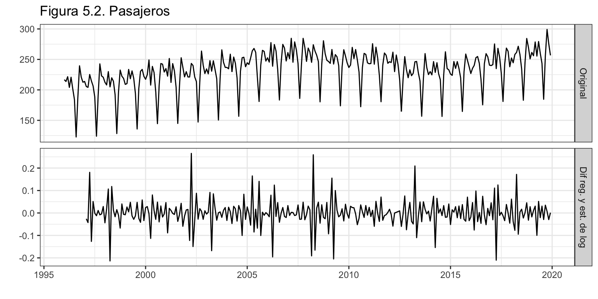
Identificación de la serie Pasajeros
Vamos a identificar los valores de \(p\), \(q\), \(P\) y \(Q\) del proceso Arima. Para ello, analizaremos la FAC y la FACP, y solicitaremos con auto.arima y seas una identificación automática, en el primer caso incluyendo todos los efectos calendario ya identificados.
Identificación con la FAC y FACP
La figura 5.3 muestra la FAC y FACP de la serie transformada. En la parte regular la FAC presenta un único coeficiente de autocorrelación elevado para el primer retardo y la FACP muestra un rápido decrecimiento de las autocorrelaciones parciales. Esta es la huella dactilar de un proceso regular MA(1). El análisis de la parte estacional no es tan sencillo. Tanto en la FAC como en la FACP las autocorrelaciones de los retardos múltiplos de 12 decaen de forma irregular y parecen indicar que estamos ante un proceso ARMA\(_{12}\). Podemos asumir por simplicidad que \(P=Q=1\). Por tanto, la identificación de partida deducida de este análisis sería \(\log(Pasajeros) \sim ARIMA(0, 1, 1)ARIMA_{12}(1, 1, 1)\).
ggtsdisplay(diff(diff(log(Pasajeros), lag = 12)), lag = 72,
main = "Figura 5.3. FAC y FACP Pasajeros (log y d = D = 1)")
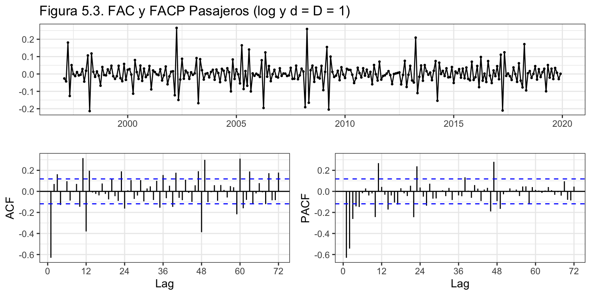
Identificación automática con auto.arima
Para ayudar a la función auto.arima en el proceso de identificación vamos a definir previamente todas las variables de intervención que en el desarrollo del análisis de la serie hemos ido identificando: días del mes, días laborables del mes, meses de diciembre con el día de Navidad en lunes y Semana Santa:
- La variables días laborables del mes ya ha sido definida previamente como DiasLaborables.
- La variable Días del mes se puede definir directamente con la función
monthdays de la librería forecast. En lugar de días del mes, consideraremos la variable días no laborables del mes, resultante de restar a los días del mes los días laborables.
- Los meses de diciembre en que Navidad cae en lunes requiere un poco más de trabajo. La idea general es generar un rango de fechas diarias que cubra todo el periodo de análisis (variable fechas), identificar los lunes de navidad (variable dicotómica lunesNavidad), eliminar el identificador del día del rango de fechas con la función
format y, por último, con tapply sumar para cada mes-año los lunes de navidad, que lógicamente solo tendrán lugar algunos meses de diciembre y una sola vez. En los objetos definidos con la función as.POSIXlt los meses van de 0 a 11 (enero a diciembre) y los días de la semana de 0 a 6 (domingo a sábado).
- La creación de las variables de intervención que estiman el efecto de la Semana Santa es aún más complejo. El efecto del viernes de Semana Santa ya queda recogido en la variable DiasNoLaborables. Lo que vamos a hacer ahora es crear una variable que permita estimar el efecto de las vacaciones escolares (y de muchos padres y madres) de lunes a Jueves Santo en aquellas comunidades donde así es; y otra variable para estimar el efecto de las vacaciones escolares que tienen lugar la semana posterior al Domingo de Resurrección, de lunes a viernes tras Semana Santa. Estas nuevas variables (DiasPreSanta y DiasPascua) valdrán cero para los meses distintos de marzo y abril, pero para marzo y abril valdrán la proporción de días vacacionales que recaen en el correspondiente mes.
DiasNoLaborables <- monthdays(Pasajeros) - DiasLaborables
pDiasNoLaborables <- monthdays(PasajerosEtsPre$mean) - pDiasLaborables
fechas <- as.POSIXlt(seq(from = as.Date("1996-1-1"),
to = as.Date("2024-12-31"),
by = 1))
LunesNavidad <- 1*(fechas$wday == 1 & fechas$mon == 11 & fechas$mday == 25)
fechas <- format(fechas, format = "%Y-%m")
LunesNavidad <- tapply(LunesNavidad, fechas, sum)
LunesNavidad <- ts(LunesNavidad, start = 1996, frequency = 12)
pLunesNavidad <- subset(LunesNavidad, start = length(LunesNavidad) - 59)
LunesNavidad <- subset(LunesNavidad, end = length(LunesNavidad) - 60)
LunesNavidad[LunesNavidad == 1]
2000-12 2006-12 2017-12
1 1 1
LunSanto <- Easter(1996:2024, shift = -6)
MarSanto <- Easter(1996:2024, shift = -5)
MieSanto <- Easter(1996:2024, shift = -4)
JueSanto <- Easter(1996:2024, shift = -3)
PreSanta <- c(LunSanto, MarSanto, MieSanto, JueSanto)
biz <- fechaDiaria[isBizday(fechaDiaria, holidays = PreSanta, wday = 0:6)]
bizdays <- format(biz, format = "%Y-%m")
DiasPreSanta <- table(bizdays)
DiasPreSanta <- ts(DiasPreSanta, start = 1996, frequency = 12)
DiasPreSanta <- (monthdays(DiasPreSanta) - DiasPreSanta)/4
pDiasPreSanta <- subset(DiasPreSanta, start = length(DiasPreSanta) - 59)
DiasPreSanta <- subset(DiasPreSanta, end = length(DiasPreSanta) - 60)
LunPascua <- Easter(1996:2024, shift = 1)
MarPascua <- Easter(1996:2024, shift = 2)
MiePascua <- Easter(1996:2024, shift = 3)
JuePascua <- Easter(1996:2024, shift = 4)
ViePascua <- Easter(1996:2024, shift = 5)
Pascua <- c(LunPascua, MarPascua, MiePascua, JuePascua, ViePascua)
biz <- fechaDiaria[isBizday(fechaDiaria, holidays = Pascua, wday = 0:6)]
bizdays <- format(biz, format = "%Y-%m")
DiasPascua <- table(bizdays)
DiasPascua <- ts(DiasPascua, start = 1996, frequency = 12)
DiasPascua <- (monthdays(DiasPascua) - DiasPascua)/5
pDiasPascua <- subset(DiasPascua, start = length(DiasPascua) - 59)
DiasPascua <- subset(DiasPascua, end = length(DiasPascua) - 60)
head(DiasPreSanta, n = 60)
Jan Feb Mar Apr May Jun Jul Aug Sep Oct Nov Dec
1996 0.00 0.00 0.00 1.00 0.00 0.00 0.00 0.00 0.00 0.00 0.00 0.00
1997 0.00 0.00 1.00 0.00 0.00 0.00 0.00 0.00 0.00 0.00 0.00 0.00
1998 0.00 0.00 0.00 1.00 0.00 0.00 0.00 0.00 0.00 0.00 0.00 0.00
1999 0.00 0.00 0.75 0.25 0.00 0.00 0.00 0.00 0.00 0.00 0.00 0.00
2000 0.00 0.00 0.00 1.00 0.00 0.00 0.00 0.00 0.00 0.00 0.00 0.00
Jan Feb Mar Apr May Jun Jul Aug Sep Oct Nov Dec
1996 0.0 0.0 0.0 1.0 0.0 0.0 0.0 0.0 0.0 0.0 0.0 0.0
1997 0.0 0.0 0.2 0.8 0.0 0.0 0.0 0.0 0.0 0.0 0.0 0.0
1998 0.0 0.0 0.0 1.0 0.0 0.0 0.0 0.0 0.0 0.0 0.0 0.0
1999 0.0 0.0 0.0 1.0 0.0 0.0 0.0 0.0 0.0 0.0 0.0 0.0
2000 0.0 0.0 0.0 1.0 0.0 0.0 0.0 0.0 0.0 0.0 0.0 0.0
Se muestra para los primeros 5 años el valor de las dos variables de intervención de Semana Santa.
Ahora tenemos todos los elementos para pedir la identificación automática con auto.arima.
auto.arima(Pasajeros,
lambda = 0,
d = 1,
D = 1,
xreg = cbind(DiasLaborables, DiasNoLaborables,
LunesNavidad, DiasPreSanta, DiasPascua))
Series: Pasajeros
Regression with ARIMA(0,1,1)(0,1,1)[12] errors
Box Cox transformation: lambda= 0
Coefficients:
ma1 sma1 DiasLaborables DiasNoLaborables LunesNavidad
-0.5778 -0.4191 0.0352 0.0159 0.028
s.e. 0.0495 0.0531 0.0057 0.0057 0.008
DiasPreSanta DiasPascua
-0.0577 -0.0249
s.e. 0.0042 0.0070
sigma^2 estimated as 0.0003213: log likelihood=718.29
AIC=-1420.59 AICc=-1420.05 BIC=-1391.65
La identificación automática coincide bastante con la realizada a partir de la FAC y FACP. Además, parece que todas las variables de intervención con significativas.
Identificación automática con seas
La función seas de seasonal es más robusta en su proceso de identificación que auto.arima. Además, el proceso de identificación incluye algunas de las variables de intervención consideradas.
summary(seas(log(Pasajeros)))
Call:
seas(x = log(Pasajeros))
Coefficients:
Estimate Std. Error z value Pr(>|z|)
Leap Year 0.026064 0.005646 4.616 0.00000390983093 ***
Weekday 0.005290 0.000265 19.961 < 0.0000000000000002 ***
Easter[1] -0.086920 0.003189 -27.256 < 0.0000000000000002 ***
AO2005.Jul -0.054012 0.013229 -4.083 0.00004447912245 ***
AR-Nonseasonal-01 -0.977070 0.271821 -3.595 0.000325 ***
AR-Nonseasonal-02 -0.598142 0.121493 -4.923 0.00000085119269 ***
AR-Nonseasonal-03 -0.305870 0.087245 -3.506 0.000455 ***
MA-Nonseasonal-01 -0.557423 0.281089 -1.983 0.047358 *
MA-Seasonal-12 0.383232 0.055864 6.860 0.00000000000688 ***
---
Signif. codes: 0 '***' 0.001 '**' 0.01 '*' 0.05 '.' 0.1 ' ' 1
SEATS adj. ARIMA: (3 1 1)(0 1 1) Obs.: 288 Transform: none
AICc: -1375, BIC: -1339 QS (no seasonality in final): 0
Box-Ljung (no autocorr.): 54.28 *** Shapiro (normality): 0.9897 *
En este caso el proceso identificado en la parte regular es más complejo que el obtenido con auto.arima, ARIMA(3,1,1). Además, se han incluido variables de intervención asociadas a los años bisiestos, la Semana Santa y días laborables. Conjuntamente estas variables de intervención recogen los mismos efectos considerados por nosotros.
Concluimos que el modelo de partida para Pasajeros será \(\log(Pasajeros) \sim ARIMA_{12}(0, 1, 1)(0, 1, 1) + AI\).
Estimación del modelo e identificación de otras componentes de intervención
Vamos a estimar el modelo identificado y a analizar la presencia de otros valores atípicos en el residuo.
PasajerosAri <- Arima(Pasajeros,
lambda = 0,
order = c(0, 1, 1),
seasonal = c(0, 1, 1),
xreg = cbind(DiasLaborables, DiasNoLaborables,
LunesNavidad, DiasPreSanta, DiasPascua))
PasajerosAri
Series: Pasajeros
Regression with ARIMA(0,1,1)(0,1,1)[12] errors
Box Cox transformation: lambda= 0
Coefficients:
ma1 sma1 DiasLaborables DiasNoLaborables LunesNavidad
-0.5778 -0.4191 0.0352 0.0159 0.028
s.e. 0.0495 0.0531 0.0057 0.0057 0.008
DiasPreSanta DiasPascua
-0.0577 -0.0249
s.e. 0.0042 0.0070
sigma^2 estimated as 0.0003213: log likelihood=718.29
AIC=-1420.59 AICc=-1420.05 BIC=-1391.65
error <- residuals(PasajerosAri)
sderror <- sd(error)
autoplot(error, series="Error",
colour = "black",
xlab = "",
ylab = "Error",
main = "Figura 5.4. Error + Intervención. Modelo ARIMA") +
geom_hline(yintercept = c(-3, -2, 0, 2, 3)*sderror,
colour = c("red", "blue", "black", "blue", "red"),
lty = 2) +
scale_x_continuous(breaks= seq(1996, 2019, 2))
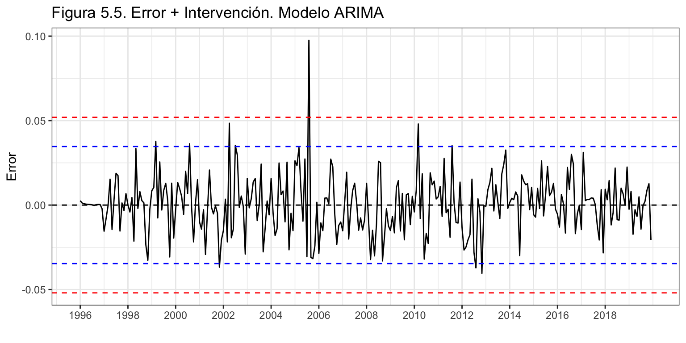
Identificamos tres meses en los que el error supera o casi alcanza las tres desviaciones típicas y son candidatos a valores atípicos: abril de 2002, agosto de 2005 y marzo de 2010. No es fácil conocer las causas para estos valores atípicos.
Tras incluir las correspondientes variables artificiales en el modelo y estimarlo, identificamos otro valor extremo en agosto de 2006 y precedimos a incluirlo en el modelo y repetir el análisis. En esta ocasión ya no identificamos más valores atípicos.
d0402 <- 1*(trunc(time(Pasajeros)) == 2002 & cycle(Pasajeros) == 4)
d0805 <- 1*(trunc(time(Pasajeros)) == 2005 & cycle(Pasajeros) == 8)
d0806 <- 1*(trunc(time(Pasajeros)) == 2006 & cycle(Pasajeros) == 8)
d0310 <- 1*(trunc(time(Pasajeros)) == 2010 & cycle(Pasajeros) == 3)
PasajerosAri <- Arima(Pasajeros,
lambda = 0,
order = c(0, 1, 1),
seasonal = c(0, 1, 1),
xreg = cbind(DiasLaborables, DiasNoLaborables,
LunesNavidad, DiasPreSanta, DiasPascua,
d0402, d0805, d0806, d0310))
PasajerosAri
Series: Pasajeros
Regression with ARIMA(0,1,1)(0,1,1)[12] errors
Box Cox transformation: lambda= 0
Coefficients:
ma1 sma1 DiasLaborables DiasNoLaborables LunesNavidad
-0.5280 -0.3747 0.0343 0.0158 0.0260
s.e. 0.0538 0.0592 0.0051 0.0052 0.0072
DiasPreSanta DiasPascua d0402 d0805 d0806 d0310
-0.0579 -0.0253 0.0333 0.0644 0.0283 0.0377
s.e. 0.0042 0.0067 0.0130 0.0126 0.0126 0.0126
sigma^2 estimated as 0.0002841: log likelihood=737.64
AIC=-1451.29 AICc=-1450.09 BIC=-1407.88
error <- residuals(PasajerosAri)
sderror <- sd(error)
autoplot(error, series="Error",
colour = "black",
xlab = "",
ylab = "Error",
main = "Figura 5.5. Error + Intervención. Modelo ARIMA") +
geom_hline(yintercept = c(-3, -2, 0, 2, 3)*sderror,
colour = c("red", "blue", "black", "blue", "red"),
lty = 2) +
scale_x_continuous(breaks= seq(1996, 2019, 2))
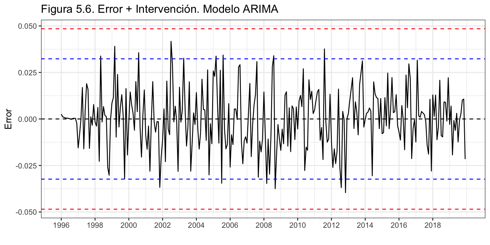
Antes de finalizar el proceso de identificación vamos a confirmar la significatividad de todos los parámetros estimados haciendo uso del estadístico de Wald.
datos <- NULL
for(i in 1:length(coef(PasajerosAri))) {
datos <- rbind(datos,
data.frame(
"Coeficiente" = names(coef(PasajerosAri))[i],
"Valor de p" = wald.test(b = coef(PasajerosAri),
Sigma = vcov(PasajerosAri),
Terms = i)$result$chi2[3])
)
}
kable(datos, digits = 4, row.names = FALSE, caption = "Contrastes de significatividad")
Contrastes de significatividad
| ma1 |
0.0000 |
| sma1 |
0.0000 |
| DiasLaborables |
0.0000 |
| DiasNoLaborables |
0.0023 |
| LunesNavidad |
0.0003 |
| DiasPreSanta |
0.0000 |
| DiasPascua |
0.0001 |
| d0402 |
0.0105 |
| d0805 |
0.0000 |
| d0806 |
0.0247 |
| d0310 |
0.0028 |
Validación del modelo
En el proceso de validación verificaremos si se cumplen las hipótesis básicas sobre el vector de residuos y analizaremos la calidad de ajuste y predicción del modelo estimado.
Incorrelación, Homocedasticidad y Normalidad
Veamos si el residuo es ruido blanco.
Box.test(error, lag = 2,type = "Ljung-Box")
Box-Ljung test
data: error
X-squared = 0.02196, df = 2, p-value = 0.9891
Box.test(error, lag = 24,type = "Ljung-Box")
Box-Ljung test
data: error
X-squared = 25.216, df = 24, p-value = 0.3941
Box.test(error^2, lag = 2, type = "Ljung-Box")
Box-Ljung test
data: error^2
X-squared = 3.5317, df = 2, p-value = 0.171
Box.test(error^2, lag = 24, type = "Ljung-Box")
Box-Ljung test
data: error^2
X-squared = 25.851, df = 24, p-value = 0.3608
Jarque Bera Test
data: error
X-squared = 0.40486, df = 2, p-value = 0.8167
El error muestra ser incorrelado, homocedástico y seguir una distribución normal.
Calidad del ajuste
Analizando los criterios de bondad de ajuste (sobre el error de predicción intra-muestral a un periodo vista) se tiene un error medio (ME) de -0.04 que es prácticamente cero por lo que no parece que haya sesgo en las predicciones; en media nos equivocamos 3.7 millones de pasajeros (RMSE) y el error porcentual medio (MAPE) es 1.3%, muy bajo. Para ambos indicadores de bondad de ajuste el error obtenido es la mitad que el visto con alisado.
ME RMSE MAE MPE MAPE MASE ACF1
Training set -0.04 3.72 2.92 0.01 1.26 0.35 0.02
Calidad de las predicciones
Se completará el proceso de validación estimado el error de predicción extra muestral según el horizonte temporal. Se considerarán 10 años para el periodo de estimación y un año para el de predicción.
k <- 120
h <- 12
T <- length(Pasajeros)
s<-T - k - h
mapeArima <- matrix(NA, s + 1, h)
X <- cbind(DiasLaborables, DiasNoLaborables,
LunesNavidad, DiasPreSanta, DiasPascua,
d0402, d0805, d0806, d0310)
for (i in 0:s) {
train.set <- subset(Pasajeros, start = i + 1, end = i + k)
test.set <- subset(Pasajeros, start = i + k + 1, end = i + k + h)
X.train <- X[(i + 1):(i + k),]
hay <- colSums(X.train)
X.train <- X.train[, hay>0]
X.test <- X[(i + k + 1):(i + k + h),]
X.test <- X.test[, hay>0]
fit <- try(Arima(train.set,
lambda = 0,
order = c(0, 1, 1),
seasonal = c(0, 1, 1),
xreg = X.train), silent = TRUE)
if (!is.element("try-error", class(fit))) {
fcast <- forecast(fit, h = h, xreg = X.test)
mapeArima[i + 1,] <- 100*abs(test.set - fcast$mean)/test.set
}
}
errorArima <- colMeans(mapeArima, na.rm = TRUE)
round(errorArima, 2)
[1] 1.45 1.63 1.69 1.81 1.95 2.07 2.19 2.33 2.39 2.54 2.73 2.91
El error es creciente en el horizonte temporal de predicción. Para predicciones extra-muestrales a un periodo vista vale 1.5%, algo superior al error de estimación, pero realmente bajo. Incluso para predicciones a doce meses vista, el error sigue siendo reducido, 2.9%. Recordemos que para alisado era de 3.6%.
Interpretación del modelo estimado
El modelo estimado y validado corresponde al modelo de las aerolíneas con intervención: \(ARIMA_{12}(0,1,1)(0,1,1) + AI\). La ecuación teórica completa del modelo es: \[(1-L)(1-L^{12})\log(Pasajeros) = (1+\theta_1 L)(1 + \theta_{12} L^{12})\varepsilon_t+\] \[\gamma_1 DiasLaborables +\gamma_2 DiasNoLaborables +\gamma_3 LunesNavidad+\] \[\gamma_4 DiasPreSanta + \gamma_5 DiasPascua +\] \[\gamma_6 d0402 +\gamma_7 d0805 +\gamma_8 d0806 +\gamma_9 d0310.\]
Si se desarrolla el modelo y se deja en función de la tasa de variación anual del número de pasajero, queda (la parte de intervención no cambia):
\[TVAPasajeros_t = TVAPasajeros_{t-1} + \theta_1 \varepsilon_{t-1} + \theta_{12} \varepsilon_{t-12}+ \theta_1 \theta_{12} \varepsilon_{t-13}+\varepsilon_t + AI.\] Finalmente, el modelo estimado es: \[\widehat{TVAPasajeros}_t = TVAPasajeros_{t-1} -0.53 \varepsilon_{t-1} -0.37 \varepsilon_{t-12}+ 0.20 \varepsilon_{t-13} +\] \[0.034\cdot DiasLaborables +0.016\cdot DiasNoLaborables+ 0.026\cdot LunesNavidad\] \[- 0.058\cdot DiasPreSanta - 0.025\cdot DiasPascua +\] \[0.033\cdot d0402 +0.064\cdot d0805 +0.028\cdot d0806 +0.038\cdot d0310.\] Interpretación:
- La tasa de variación anual del número de pasajeros en transporte urbano para un mes dado es la misma que la observada en el mes previo.
- Si hace uno, doce o trece meses se observó un número atípico de pasajeros, se debe tener en cuenta para corregir la predicción.
- Cada día laborable adicional en un mes supone un incremento en el número de pasajeros del 3.4% y cada día no laborable adicional del 1.6%.
- Si la Navidad cae en lunes y por tanto Nochebuena en domingo, ese mes de diciembre el número de pasajeros será un 2.6% superior a la de un mes de diciembre donde la Navidad no cae en lunes.
- Si los días laborables (lunes a jueves) de la Semana Santa caen íntegramente en marzo, ese mes el número de pasajeros cae un 5.8% respecto de un marzo sin Semana Santa. Lo mismo pasaría con abril.
- De la misma forma, si los días laborables (lunes a viernes) de la semana posterior a Domingo de Resurrección (semana de Pascua) caen en marzo, ese mes el número de pasajeros cae un 2.5% respecto de un marzo sin Pascua. Lo mismo para abril.
- Ademas, para cuatro meses se observó una tasa de variación anual atípicamente superior a la esperada.
Predicción del número de pasajeros en transporte urbano
Una vez dado por válido el modelo, podemos pasar a realizar predicciones para los próximos años. Para las variables de intervención sujetas a fecha de calendario ya hemos ido creando sus valores previstos, para las demás los fijaremos a cero.
pPasajerosAri <- forecast(PasajerosAri,
h = 60,
xreg = cbind(pDiasLaborables, pDiasNoLaborables,
pLunesNavidad, pDiasPreSanta, pDiasPascua,
rep(0, 60), rep(0, 60),
rep(0 ,60), rep(0, 60)),
level = 95)
autoplot(pPasajerosAri,
xlab = "",
ylab = "",
main = "Figura 5.6. Pasajeros (1996-2019) y predicción (2020-2024). Modelo Arima.") +
scale_x_continuous(breaks= seq(1996, 2024, 4))
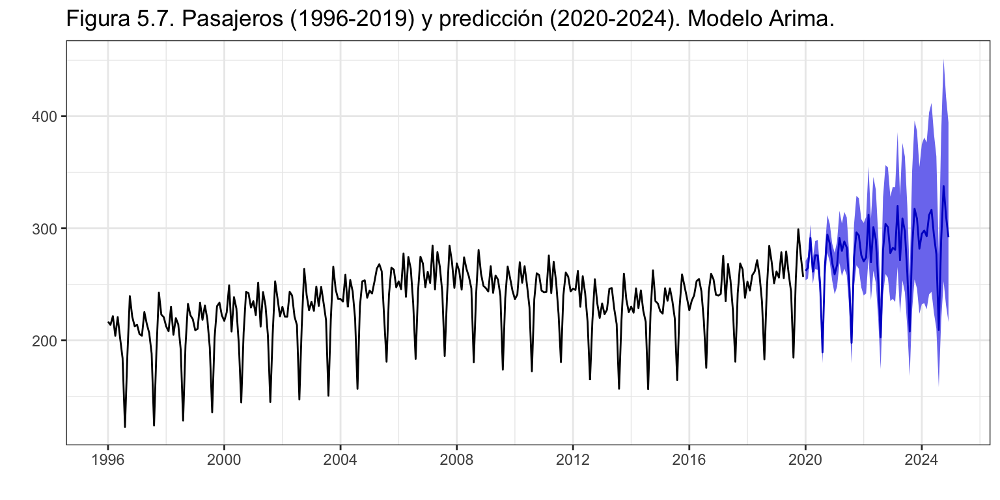
Así, en 2020 se esperan 3188 millones de pasajeros y para 2021 un total de 3258 millones de pasajeros.
Comparación entre modelos
Para finalizar este análisis, vamos a comparar la calidad de ajuste y de predicción de los tres modelos estimados en este ejemplo: el método ingenuo con estacionalidad, el método de Alisado exponencial y el modelo Arima.
Recordemos que el método ingenuo con estacionalidad tenía un error de ajuste del 3.5% o 11 millones de pasajeros (RMSE). Mientras que para el mejor modelo de alisado obtenido (ETS(M,Ad,A)) se tiene un error absoluto porcentual del 2.5% equivalente a 7.5 millones de pasajeros. Por último, el modelo ARIMA presenta un error de 1.3% o 3.7 millones de pasajeros.
Claramente, el modelo de alisado supone una mejora sustancial sobre el método ingenuo y el modelo ARIMA sobre el de alisado con una reducción, en este último caso, del 50% en los dos indicadores de calidad contemplados.
Respecto de la calidad de las predicciones extra-muestrales, la figura 6.1 muestra los valores para el modelo de Alisado y ARIMA.
datos <- data.frame(
factor = c(rep("Alisado", 12),
rep("Arima", 12)),
x = c(1:12, 1:12),
y = c(errorAlisadoPas, errorArima)
)
ggplot(datos, aes(x = x, y = y, colour= factor)) +
geom_line() +
ggtitle("Figura 6.1. Error de predicción (MAPE) según horizonte temporal y enfoque") +
xlab("Horizonte temporal de predicción") +
ylab("%") +
scale_x_continuous(breaks= 1:12) +
scale_y_continuous(breaks= seq(1.5, 4, .5)) +
guides(colour = guide_legend(title = "Métodos")) +
theme(legend.position=c(0.02,0.98), legend.justification=c(0,1))
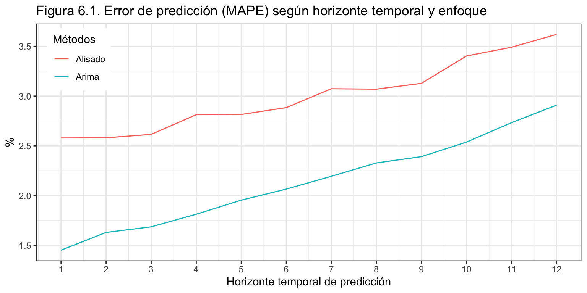
Con independencia del horizonte temporal, el error de previsión extra-muestral del modelo ARIMA es menor que el error del modelo de alisado, aunque la diferencia se reduce conforme aumenta el horizonte temporal de previsión. En concreto, para previsiones a un mes vista, ARIMA comete un error 0.8 puntos porcentuales menor que el alisado, mientras que para predicciones a seis meses vista la diferencia es solo de medio punto y para un horizonte de doce meses de 0.4 puntos.
El método ARIMA nos permite obtener las predicciones más precisas y además entender un poco mejor cuales son los determinantes del número de pasajeros en transporte urbano y su efecto sobre la serie. El método de Alisado exponencial permite obtener predicciones bastante buenas con una simple línea de código. La conveniencia de uno o otro método dependerá de la importancia que se dé a la calidad de las predicciones, la comprensión de los determinantes de la serie o la complejidad de la metodología, entre otros aspectos.
Lista de funciones utilizadas
| aod |
wald.test |
forecast |
ggsubseriesplot |
| base |
abs |
|
ggtsdisplay |
|
as.Date |
|
monthdays |
|
as.numeric |
|
ndiffs |
|
as.POSIXlt |
|
nsdiffs |
|
c |
|
remainder |
|
cbind |
|
snaive |
|
class |
ggplot2 |
aes |
|
colMeans |
|
geom_hline |
|
colnames |
|
geom_point |
|
data.frame |
|
ggplot |
|
diff |
|
ggtitle |
|
expression |
|
guide_legend |
|
is.element |
|
guides |
|
length |
|
scale_colour_manual |
|
library |
|
scale_x_continuous |
|
list |
|
scale_y_continuous |
|
log |
|
theme |
|
matrix |
|
theme_bw |
|
mean |
|
theme_set |
|
names |
|
xlab |
|
nrow |
|
ylab |
|
rbind |
gridExtra |
grid.arrange |
|
rep |
knitr |
kable |
|
round |
seasonal |
seas |
|
rownames |
stats |
aggregate |
|
seq |
|
Box.test |
|
subset |
|
coef |
|
summary |
|
cycle |
|
table |
|
residuals |
|
tapply |
|
sd |
|
trunc |
|
stl |
|
try |
|
ts |
| forecast |
accuracy |
timeDate |
dayOfWeek |
|
Arima |
|
Easter |
|
auto.arima |
|
format |
|
autoplot |
|
isBizday |
|
BoxCox.lamb |
|
timeCalendar |
|
easter |
|
timeSequence |
|
ets |
tseries |
jarque.bera.test |
|
forecast |
utils |
read.csv2 |
|
ggAcf |
|
|
